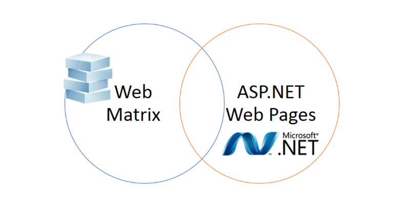
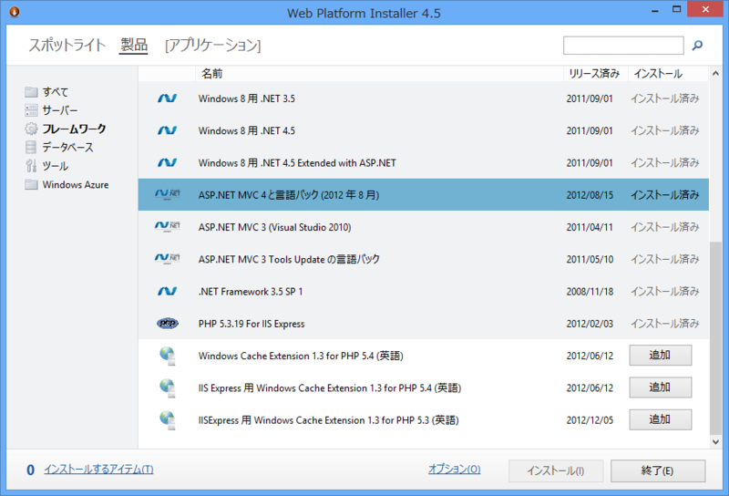
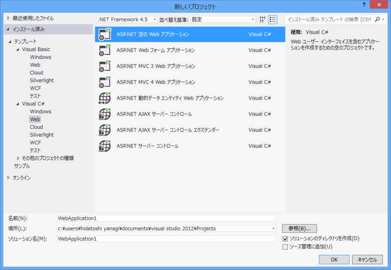
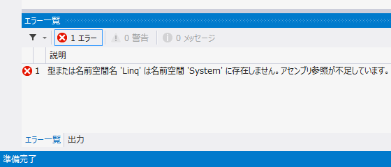

ASP.NET Web ページとは（2）
公開日：
WebMatrix と ASP.NET Web Pages

これでだいたい ASP.NET Web Pages と WebMatrix の違いは説明できるかなぁ、と思う。
- WebMatrix は ASP.NET Web Pages の開発もできる開発環境
- ASP.NET Web Pages は WebMatrix でも使えるフレームワーク
ってな感じですね。

ASP.NET Web Pages そのものは開発環境に依存しない。
- Microsoft .NET Framework 4 以降
- ASP.NET MVC (ASP.NET Web Pages もインストールされる)
- IIS Express
- Microsoft SQL Server Compact 4.0（使わないなら入れなくていいと思う）
と、ソースコードを記述するためのテキストエディターがあればよい。必要なコンポーネントは Web Platform Installer : The Official Microsoft IIS Site で個別にインストール可能で、
iisexpress.exe /port:35896 /path:C:\Path\To\WebSite
とコマンドを打てば、Web サイト（Web アプリケーション）を実行できる。
Visual Studio と APS.NET Web Pages
ASP.NET Web Pages の開発には、WebMatrix 以外にも、Visual Studio が利用できる。対応バージョンの関係は以下の通り。
| Visual Studio 2010 | Visual Studio 2012 | |
|---|---|---|
| ASP.NET Web Pages 1.0 | Install ASP.NET MVC 3 | Install ASP.NET MVC 3 |
| ASP.NET Web Pages 2 | Install ASP.NET MVC 4 | （Included） |
今のところ、「ASP.NET MVC - 2」が ASP.NET Web Pages のバージョンみたいだね。
ちなみに、入門者向けに無償提供されている Visual Studoio 2012 Express for Web でも ASP.NET Web Pages は利用可能*1。 とくに問題がなければ入れておくことをお勧めする。

とはいえ、Visual Studio そのものに ASP.NET Web Pages のための特別なサポートがあるわけじゃない（MVC はがっつりサポートされてるけど）。サイトテンプレートもないし、CSHTML ファイルを追加するメニューすらない。なので、あくまでも WebMatrix をメインに開発しつつ、デバッグ機能やインスペクタ機能なんかが使いたくなったら Visual Studio を補助的に使うというのがオススメ。そっちのほうが ASP.NET Web Pages 本来の“軽量な”という理念にも合うしね。なんにしろ頼れるお兄さんがいるのは心強い。
- http://www.asp.net/web-pages/overview/using-visual-studio/program-asp-net-web-pages-in-visual-studio
補足

WebMatrix で開発した Web サイトを Visual Studio で実行すると、
型または名前空間名 'Linq' は名前空間 'System' に存在しません。アセンブリ参照が不足しています。
などと表示され、うまく動作しないことがある。これはターゲットフレームワークが .NET Framework 2.0 （？）になっているからのようだ。Web.config に
<?xml version="1.0"?> <configuration> <system.web> <compilation targetFramework="4.0"><!-- 4.5 でも？ --> </compilation> </system.web> </configuration>
という記述を追加しておくといい。
*1:Visual Web Developer はどうだか知らんけど、わざわざ古いものを使わなくていいと思う